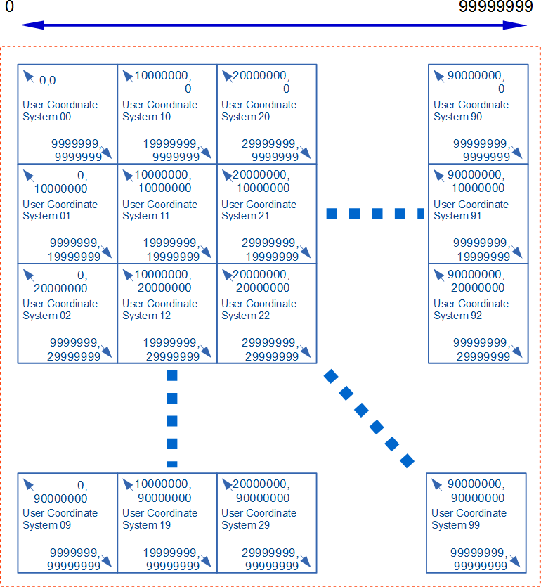
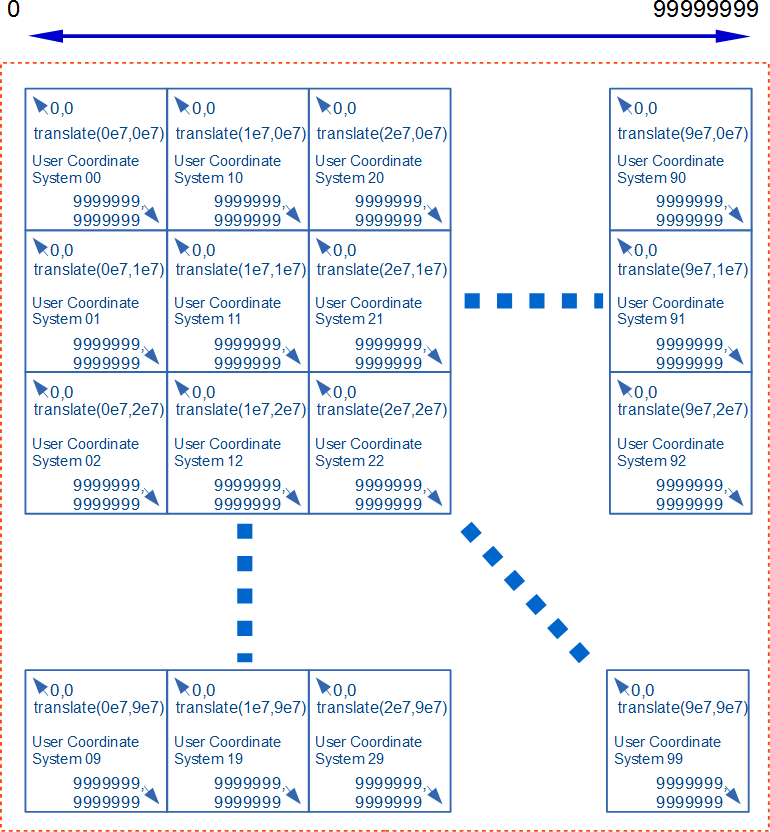

There are various ways that an SVG document fragment can be
referenced by or included in other documents and then as a consequence
be processed by a user agent. SVG documents can also be viewed as a
top-level document. Each different method by which an SVG document fragment
can be used implies a certain set of requirements on how the SVG document
fragment must be processed.
This section defines a number of referencing
modes that encompass the different ways SVG documents can
be used on the Web platform and which specify how the documents must be
processed. Each referencing mode is defined by requiring the SVG document
be processed in a given processing mode.
Processing modes are introduced in section 3 below
and define which features are enabled or disabled in the document.
This document does not place normative requirements on
other specifications that can reference or include SVG documents, such as
HTML and various CSS specifications. The intention is for these other
specifications to normatively point to the appropriate referencing mode
from this document.
This referencing mode is for SVG documents that are externally referenced
and embedded for presentation in a host document. SVG documents referenced by the
SVG 'iframe' element must use the
embedded documentreferencing mode.
Note that the embedded document referencing mode
is not used for inline SVG fragments within an HTML document.
This referencing mode is intended to be used when
an SVG document is referenced by an HTML
'img' element or
by any CSS property that takes an
<image>
value, and if animations can be run.
static image document
This referencing mode is for SVG documents that are used as images,
where the context would typically be expecting a raster image but where
animations are unable to run. SVG documents
referenced by the SVG 'image' element must use the
static image documentreferencing mode if
the referencing SVG document is using the
static image document mode.
This referencing mode is intended to be used when
an SVG document is referenced by an HTML
'img' element or
by any CSS property that takes an
<image>
value, and if animations cannot be run.
resource document
This referencing mode is for SVG documents that are loaded
as resource documents in order to use their 'mask element',
'pattern element', gradient, or other resource elements.
SVG documents loaded due to a reference to an external document from any
of the following features must use the
resource documentreferencing mode:
This referencing mode is intended to used by the
OpenType specification for processing documents from the "SVG"
table.
Should the CSS Variables that map the palette
colors into the document be defined here too? It probably makes
sense to keep that in the OpenType specification.
SVG document fragments that are included inline in a host document
use a referencing mode that matches
that of the host document. SVG document fragments included as
children of an SVG 'foreignObject' element must use the
referencing mode of the referencing
SVG document.
This section defines a number of processing modes
for SVG documents. Each processing mode specifies whether certain high level
SVG features are enabled.
Features
The features that can be enabled or disabled depending
on the processing mode are as follows:
declarative animation
Declarative animation includes both the SMIL animation elements in SVG –
'animate', 'animateMotion',
'animateTransform' and 'set' – and CSS Transitions and Animations.
When declarative animations are disabled in an SVG document, any SMIL
animations or CSS Transitions or Animations must not be applied or run.
This is not the same as pausing the document's animated
state at 0s document time; if a SMIL animation is defined to begin at 0s,
it still will not be applied.
references to external resources
References to external resources are URLs that can be used in any of the following
SVG features, where any of the URL's components, ignoring the fragment,
do not match the document's URL:
any other network requests made by script, HTML, CSS or other
Web platform features used in the document
User agents must apply CORS policies when fetching external resources
used in any of the SVG features listed above.
To protect against unlimited resource fetching and cycles in external
resources, user agents must limit external resources to a single level of
depth, so that referenced external resources
cannot reference external resources.
When external references are disabled in an SVG document, any attempt to
fetch a document through an external reference must instead be treated as
if a network error occurred and no data was received.
This is all too handwavy. And we perhaps shouldn't try
to make an exhaustive list. This needs to be defined in
terms of Fetch, probably. And the URL Standard for comparing the URLs.
script execution
Script execution is the execution of any SVG 'script' elements,
script found in event listener attributes (such as 'onclick' on
SVG elements), or any other script defined by other Web platform features
used in the document such as any HTML 'script' elements.
When script execution is disabled in an SVG document, no script in the
document must be run.
interaction
Interaction refers to the delivery of DOM Events or the invocation of
any user agent specific UI behaviors such as text selection, focus changing,
link traversal, or animation or transition triggering that is done in
response to user input such as mouse or keyboard activity. When
interaction is disabled in an SVG document, any user input events that would
be targetted at the document or any elements within the document must have
no effect.
Dynamic interactive mode
This processing mode imposes no restrictions on any
feature of the SVG language.
Dynamic Interactive Features
script execution
yes
external references
yes
declarative animation
yes
interactivity
yes
Animated mode
This processing mode is intended for circumstances where
an SVG document is to be used as an animated image that is allowed
to resolve external references, but which is not intended to be used
as an interactive document.
This processing mode is intended for circumstances where
an SVG document is to be used as an animated image that is not allowed
to resolve external references, and which is not intended to be used
as an interactive document. This mode might be used where image support
has traditionally been limited to raster images (such as JPEG, PNG and
GIF).
Secure Animated Features
script execution
no
external references
no
declarative animation
yes
interactivity
no
Static mode
This processing mode is intended for circumstances where
an SVG document is to be used as a non-animated image that is allowed
to resolve external references, but which is not intended to be used
as an interactive document.
This processing mode is intended for circumstances where
an SVG document is to be used as a non-animated image that is not allowed
to resolve external references, and which is not intended to be used
as an interactive document. This mode might be used where image support
has traditionally been limited to non-animated raster images (such as JPEG
and PNG.)
Secure Static Features
script execution
no
external references
no
declarative animation
no
interactivity
no
Examples
Below are various methods of embedding SVG in an HTML page by
reference. Each referencing mode element should display a yellow
smiley face. In each example below, clicking on the eyes tests link
traversal, and clicking on the face tests declarative interactivity
and script execution. The link should replace the image with a blue
square (clicking on that will return you to the original image). The
declarative interactivity, which uses the 'set' element, should change
the image from shades of yellow to shades of green. The script should fill
in the smile. Time-based (as opposed to interactivity-based) declarative
animation is supported if the left eye is winking.
object
iframe
img
CSS background
Introduction
In order to ensure that SVG-family documents are maximally portable
among SVG-family user agents, this specification rigidly defines
conformance requirements for both, as well as for SVG-family document
types. While the conformance definitions can be found in this appendix,
they necessarily reference normative text within this document and
within other related specifications. It is only possible to fully
comprehend the conformance requirements of SVG through a complete
reading of all normative references.
Conforming SVG Document Fragments
An SVG document fragment is a Conforming SVG Document Fragment if
it adheres to the specification described in this document
(Scalable Vector Graphics (SVG) Specification) and also:
SVG document fragments can be included within parent XML documents using
the XML namespace facilities described in
Namespaces in XML [xml-names].
Note, however, that since a Conforming SVG Document Fragment must have an
'svg' element as its root, the use of an individual non-'svg'
element from the SVG namespace is disallowed. Thus, the SVG part of the
following document is not conforming:
<?xml version="1.0" standalone="no"?>
<!DOCTYPE SomeParentXMLGrammar PUBLIC "-//SomeParent" "http://SomeParentXMLGrammar.dtd">
<ParentXML>
<!-- Elements from ParentXML go here -->
<!-- The following is not conforming -->
<z:rect xmlns:z="http://www.w3.org/2000/svg"
x="0" y="0" width="10" height="10" />
<!-- More elements from ParentXML go here -->
</ParentXML>
Instead, for the SVG part to become a Conforming SVG Document Fragment,
the file could be modified as follows:
<?xml version="1.0" standalone="no"?>
<!DOCTYPE SomeParentXMLGrammar PUBLIC "-//SomeParent" "http://SomeParentXMLGrammar.dtd">
<ParentXML>
<!-- Elements from ParentXML go here -->
<!-- The following is conforming -->
<z:svg xmlns:z="http://www.w3.org/2000/svg"
width="100px" height="100px">
<z:rect x="0" y="0" width="10" height="10"/>
</z:svg>
<!-- More elements from ParentXML go here -->
</ParentXML>
The SVG language or these conformance criteria provide no designated
size limits on any aspect of SVG content. There are no maximum values on
the number of elements, the amount of character data, or the number of
characters in attribute values.
does not create non-conforming SVG document fragments of the above types.
Additionally, an authoring tool which is a Conforming SVG
Generator conforms to all of the Priority 1 accessibility
guidelines from the document Authoring Tool Accessibility
Guidelines 1.0 [atag10] that are relevant
to generators of SVG content. (Priorities 2 and 3 are
encouraged but not required for conformance.)
SVG generators are encouraged to follow W3C developments in the
area of internationalization. Of particular interest is the
W3C Character Model and the concept of Webwide
Early Uniform Normalization, which promises to enhance the
interchangability of Unicode character data across users and
applications. Future versions of the SVG specification are
likely to require support of the W3C Character Model
in Conforming SVG Generators.
On occasions when expression of the information exceeding single precision is desired for some use cases such as maps and technical drawings, it is encouraged that the following generation steps are utilized.
Although the real number precision of SVG is
single-precision, presentation with an effective precision higher than
single-precision may be obtained by generating SVG content that takes advantage
of the fact that at least double-precision floating point must be used
when generating a CTM (See CTM generation processing in the
Conforming SVG Viewers section).
The steps for generating content that takes advantage of this are:
Split content into tiles such that the number of significant digits
required to position and size each object within a tile is within the
range of single precision floats. Besides, in this description,
the coordinate system which the original content has originally will be called source space.
Generate a coordinate transformation matrix per tile to transform from
source space to tile space, where tile space is a coordinate system with origin
(0,0) at the top left of the the tile. Each element of the
transformation matrix must be within the range of single precision.
Transform the contents of each tile from source space to tile space using
the generated coordinate transformation matrix. The result is that the parameters of each object can now be
expressed with significant digits within the range of single precision floats.
For each tile, generate an inverse transformation matrix for the
conversion of tile space to source space. This is used as a 'transform' attribute of the element for the tile of the next step.
Arrange each tile as a separate user coordinate system in SVG. For example,
the tiles may be expressed a 'g' elements
with an 'transform' attribute having the transformation matrix generated by the previous step.
And the split graphics generated by the third step will be placed as children of it.
Example Splitting vector graphics bigger than a tile
Before Splitting
After Splitting
Example Improving Significant Digits
Step 1 : Splitting content
Step 5 : Arranging tiles with smaller effective digits and appropriate translate


This example provides the significant figure of eight digits using tiles with the user coordinate system of seven digits.
Conforming SVG Servers
Conforming SVG Servers must meet all the requirements of a Conforming SVG
Generator. In addition, Conforming SVG Servers using HTTP or other protocols
that use Internet Media types must serve SVG stand-alone files with the media
type "image/svg+xml".
Also, if the SVG file is compressed with gzip or deflate, Conforming SVG
Servers must indicate this with the appropriate header, according to what the
protocol supports. Specifically, for content compressed by the server
immediately prior to transfer, the server must use the "Transfer-Encoding: gzip"
or "Transfer-Encoding: deflate" headers as appropriate, and for content
stored in a compressed format on the server (e.g. with the file extension "svgz"),
the server must use the "Content-Encoding: gzip" or
"Content-Encoding: deflate" headers as appropriate.
Note: Compression of stored content (the "entity," in HTTP
terms) is distinct from automatic compression of the message body, as
defined in HTTP/1.1 TE/
Transfer Encoding
([rfc2616], sections 14.39 and 14.41).
Conforming SVG DOM Subtree
A DOM subtree rooted at a given element is a Conforming SVG DOM Subtree
if, once serialized to XML, is a Conforming SVG Document Fragment.
If the DOM subtree cannot be serialized to XML, such as when a
Comment node's data contains the substring "--", then the subtree is not
a Conforming SVG DOM Subtree.
Conforming SVG Interpreters
An SVG Interpreter is a program which can parse and process
SVG document fragments. Examples of SVG Interpreters are
server-side transcoding tools (e.g., a tool which converts SVG
content into modified SVG content) or analysis tools (e.g., a
tool which extracts the text content from SVG content).
An SVG viewer also satisfies the requirements of an SVG interpreter in that it
can parse and process SVG document fragments, where processing consists of
rendering the SVG content to the target medium.
Note: A transcoder from SVG into another graphics
representation, such as an SVG-to-raster transcoder, represents
a viewer, and thus viewer conformance criteria apply.
To modulate the tradeoff of a numerical precision in use cases of the technical drawing and mapping, and the performance of user agent.
Owner:
heycam, stakagi
An SVG viewer is a program which can parse and process an
SVG document fragment and render the contents of the document
onto some sort of output medium such as a display or printer;
thus, an SVG Viewer is also an SVG Interpreter.
A Conforming SVG Viewer must be able to support at least one of the
following processing modes defined in the SVG integration specification
[svg-integration]:
For interactive user environments, facilities must exist
for zooming and panning of stand-alone SVG documents or SVG
document fragments embedded within parent XML documents.
In environments that have appropriate user interaction
facilities, the viewer must support the ability to activate
hyperlinks.
If printing devices are supported, SVG content must be
printable at printer resolutions with the same graphics
features available as required for display (e.g., the
specified colors must be rendered on color printers).
On systems where this information is available, the
parent environment must provide the viewer with information
about physical device resolution. In situations where this
information is impossible to determine, the parent
environment shall pass a reasonable value for device
resolution which tends to approximate most common target
devices.
The viewer must support JPEG and PNG
image formats [JPEG] [PNG].
Resampling of image data must be consistent with the
specification of property 'image-rendering'.
Areas of an image of SVG content may have opacity less than 100%.
The viewer must at least support Simple Alpha Compositing
of the image of the SVG content onto the target canvas, as described in the
Compositing and Blending Specification
[compositing-1].
SVG implementations must correctly support
gzip-encoded
[rfc1952] and
deflate-encoded
[rfc1951] data streams,
for any content type (including SVG, script files, images).
SVG implementations that support HTTP must support these
encodings according to the
HTTP 1.1
specification [rfc2616];
in particular, the client must specify with an "Accept-Encoding:"
request header [HTTP-ACCEPT-ENCODING]
those encodings that it accepts, including at minimum gzip
and deflate, and then decompress any
gzip-encoded and
deflate-encoded
data streams that are downloaded from the server. When an SVG
viewer retrieves compressed content (e.g., an .svgz file) over
HTTP, if the "Content-Encoding" and "Transfer-Encoding" response
headers are missing or specify a value that does not match the
compression method that has been applied to the content, then
the SVG viewer must not render the content and must treat the
document as being in error.
The viewer must support base64 encoded content using the
"data:" URL scheme
[rfc2397]
wherever URI referencing of whole documents (such as raster images,
SVG documents, fonts and color profiles) is permitted within
SVG content. (Note: fragments of SVG content which do not
constitute an entire SVG document are not available using the
"data:" URL scheme.)
The viewer must support the following W3C Recommendations
with regard to SVG content:
complete support for inclusion of non-SVG namespaces
within SVG content as defined in Namespaces in XML
[xml-names].
(Note that data from non-SVG namespaces are included in
the DOM but are otherwise ignored.)
All visual rendering must be accurate to within one
device pixel (px unit) to the mathematically correct result
at the initial 1:1 zoom ratio. It is suggested that viewers
attempt to keep a high degree of accuracy when zooming.
On systems which support accurate sRGB
[SRGB] color, all
sRGB color computations and all resulting color values must
be accurate to within one sRGB color component value, where
sRGB color component values range from 0 to 255.
The viewer must use at least single-precision floating point for intermediate calculations on any numerical operations for conversion of coordinates. However, in order to prevent the rounding error on coordinate transformation, at least double-precision floating point computation must be used on CTM generation processing. Such minimum typical computation way is expressed with following formulas.
Furthermore, when it has nested viewport coordinate sytstems, the ScreenCTM which is a transformation matrix produced by nested CTM for transforming user coordinates into the coordinates of an output device also must be generated by double-precision floating point computation.
Although anti-aliasing support is not a strict requirement
for a Conforming SVG Viewer, it is highly recommended for
display devices. Lack of anti-aliasing support will generally
result in poor results on display devices.
The Web Accessibility Initiative
is defining User Agent Accessibility Guidelines 2.0
[UAAG20]. Viewers are
encouraged to conform to the Priority 1 accessibility
guidelines defined in this document, and preferably also
Priorities 2 and 3. Once the guidelines are completed, a future
version of this specification is likely to require conformance
to the Priority 1 guidelines in Conforming SVG Viewers.
If the user agent includes an HTML or XHTML viewing
capability or can apply CSS/XSL styling properties to XML
documents, then a Conforming SVG Viewer must support
resources of MIME type "image/svg+xml" wherever raster image
external resources can be used, such as in the HTML or XHTML
'img' element and in CSS/XSL
properties that can refer to raster image resources (e.g.,
'background-image').
Professional-quality results with good processing and
rendering performance and smooth, flicker-free
animations.
On low-resolution devices such as display devices at
150dpi or less, support for smooth edges on lines, curves and
text. (Smoothing is often accomplished using anti-aliasing
techniques.)
Color management via ICC profile support (i.e., the
ability to support colors defined using ICC profiles).
Resampling of image data must conform to the requirements
for Conforming High-Quality SVG Viewers as specified in the
description of property 'image-rendering'.
At least double-precision floating point computation on
coordinate system transformation numerical calculations.
Progressive rendering and animation effects (i.e., the
start of the document will start appearing and animations
will start running in parallel with downloading the rest of
the document).
Restricted screen updates (i.e., only required areas of
the display are updated in response to redraw events).